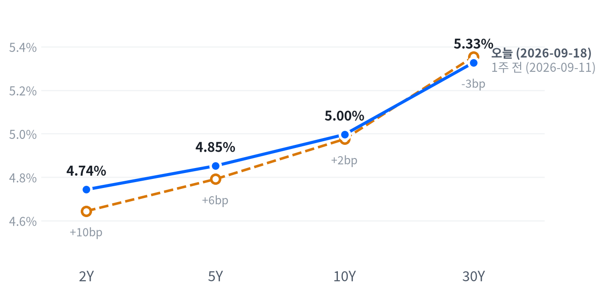

US MARKET BRIEF
유가 6% 급락에도 나스닥·S&P500은 신고가권 유지
미국 2026년 9월 18일 거래일(금) · 한국 9월 19일 발행. 가격은 일간 종가, 장중 경로는 30분봉 기준.
이날 지수는 다시 엇갈렸다. 나스닥(+0.39%)과 S&P500(+0.17%)은 올랐지만 다우(-0.18%)와 러셀2000(-0.50%)은 내렸다.
같은 날 WTI는 6.32% 급락해 사우디발 공급 차질 프리미엄이 사흘째 되돌려졌다. 멀티에셋 전략은 원자재·에너지 비중을 소폭확대에서 중립으로 낮춘다.
전략 코멘트
오늘 시장을 움직인 것은 지수보다 유가였다. WTI는 전일 대비 6.32% 급락해 95.47달러로 마감했고, 낙폭 대부분은 정규장 개장 전 이른 시간대에 이미 반영됐다.
이 하락은 위험회피가 아니라 사우디 동-서 송유관 공격 이후 형성됐던 공급 차질 프리미엄이 오만 소하르 환적 경로 복구로 되돌려진 결과에 가깝다. 같은 날 지수와 금이 나란히 오른 것은, 유가만 고유 재료로 눌린 하루였다는 관측을 뒷받침한다.
우리는 원자재·에너지 비중을 소폭확대에서 중립으로 축소한다. 이 조정은 다음 세션 종가부터 반영되고, 채권·FX·주식·귀금속·메모리·AI 인프라 여섯 자산군은 그대로 유지한다.
WTI 5일 수익률이 다시 +6% 위로 올라서면 공급 리스크 재점화로 보고 소폭확대 복귀를 검토한다. 반대로 30년물이 5.05% 아래로 내려가면 채권 숏 바이어스 축소를 별도로 논의한다.
오늘의 장
아시아는 미국과 엇갈렸고 지역 안에서도 방향이 갈렸다. 닛케이는 0.33% 올랐지만 항셍(-0.44%)과 상해종합(-0.41%)은 내렸다. 유럽은 상승세를 이어가 DAX(+0.70%)·FTSE100(+1.19%)·유로스톡스50(+0.90%) 세 지수가 모두 올랐죠. 미국은 두 지역과도 다시 갈려 나스닥·S&P500만 오르고 다우·러셀2000은 내렸다.
| 지수 | 종가 | 등락 | 기준일 |
|---|---|---|---|
| 닛케이 | 64,136.25 | +0.33% | 2026-09-17 |
| 항셍 | 24,604.29 | -0.44% | 2026-09-17 |
| 상해종합 | 3,875.60 | -0.41% | 2026-09-17 |
| DAX | 25,716.71 | +0.70% | 2026-09-17 |
| FTSE100 | 10,816.10 | +1.19% | 2026-09-17 |
| 유로스톡스50 | 6,322.90 | +0.90% | 2026-09-17 |
| VIX | 14.81 | -4.08% | 2026-09-18 |
미국 선물은 새벽 03:30 ET에 고점(ES 7,739·NQ 29,967)을 찍은 뒤 저점까지 밀렸다. ES는 오전 09:00 ET 7,692까지, NQ는 저녁 21:00 ET 29,648까지 내려간 뒤 정규장은 상승 출발했다. 개장 갭은 S&P +0.25%, 나스닥 +0.42%, 러셀2000은 거의 0%였죠. NQ의 장중 범위(1.08%)가 ES(0.61%)보다 넓었다는 것은 이날도 기술주 쪽 변동성이 더 컸다는 뜻이다.
세 지수 모두 중단권에서 마감했다 — S&P 500 76, 나스닥 84, 러셀2000 48.
마감 위치는 당일 고저 대비 종가의 위치다. 최근 2,259거래일 보정 기준 고점권 경계는 84.6, 저점권 경계는 25.3이다.
지수를 가른 것은 유가와 반도체·스토리지 랠리였다. WTI가 6.32% 급락해 에너지·소재 섹터를 눌렀고, 반대로 메모리(마이크론 +3.92%, 시게이트 +6.93%)와 광학 인프라(코히런트 +7.22%)가 대형 기술주 지수를 밀어올렸다. 같은 날 발표된 실업수당 청구(19.6만 건, 컨센서스 20.8만 건 하회)와 산업생산(0.0%, 컨센서스 +0.3% 하회)은 서로 다른 방향을 가리켜 채권시장의 방향성을 제한했죠. 9월 17일 10년물 국채 입찰은 응찰배율 2.24배로 같은 주 단기물 입찰(4주물 3.02배, 8주물 2.94배)보다 낮아 장기물 수급 부담이 옅게 남아 있었다. 위 표의 아시아·유럽 종가는 미국보다 하루 이른 9월17일 기준이라, 이날 미국 마감의 반도체·유가 재료를 아직 반영하지 못한 값이라는 점도 함께 감안해야 한다.
주식
S&P500은 7,650으로 마감해 최근 2년(504거래일) 가운데 이보다 높았던 날이 24일뿐인 자리다. 나스닥(26,523)은 19일뿐인 자리, 러셀2000(2,860)은 높은 쪽 17% 안에 있다. VIX(14.81)는 이보다 낮았던 날이 45일뿐인 하위권으로 밀렸다.
나스닥은 오전 9:30 ET 장중 고점(26,545)을 찍은 뒤 정오 12:00 ET 저점(26,336)까지 개장가 대비 0.73% 밀렸다가 오후 내내 되돌려 26,523으로 마감했다. S&P500도 같은 흐름으로 09:30 ET 고점에서 12:00 ET 저점(개장가 대비 -0.61%)까지 내려간 뒤 반등해 7,650에서 장을 마쳤다. 러셀2000은 낙폭이 가장 커 정오 저점이 개장가 대비 -0.97%였고 끝내 되돌리지 못해 2,860(-0.50%)으로 마감했다.
성장주(+0.55%)와 가치주(-0.45%)의 괴리는 이날 랠리가 반도체·메모리 중심으로 좁게 형성됐음을 보여준다. 다우(-0.18%)와 러셀2000(-0.50%)이 함께 내린 것도 대형 기술주 밖에서는 온기가 약했다는 뜻이고, 지수 이름만 보고 「오늘은 상승장」이라 뭉뚱그리면 이 균열을 놓친다.
| 지수 | 종가 | 등락률 |
|---|---|---|
| S&P 500 Growth | 140.13 | +0.55% |
| Nasdaq | 26,522.54 | +0.39% |
| S&P 500 | 7,650.50 | +0.17% |
| Dow | 51,682.64 | -0.18% |
| S&P 500 Value | 231.89 | -0.45% |
| Russell 2000 | 2,860.40 | -0.50% |
| 섹터 | 종가 | 등락률 |
|---|---|---|
| Technology | 189.60 | +0.82% |
| Industrials | 169.75 | +0.44% |
| Financials | 55.86 | -0.04% |
| Health Care | 168.39 | -0.25% |
| Energy | 64.31 | -0.26% |
| Consumer Discretionary | 111.03 | -0.32% |
| Consumer Staples | 82.80 | -0.83% |
| Real Estate | 42.53 | -0.95% |
| Communication Services | 110.81 | -1.37% |
| Utilities | 41.10 | -1.42% |
| Materials | 49.99 | -1.42% |
섹터별로는 기술(+0.82%)과 산업재(+0.44%)만 뚜렷하게 올랐고 나머지 아홉 섹터는 모두 내렸다. 소재(-1.42%)·유틸리티(-1.42%)·통신서비스(-1.37%)의 낙폭이 가장 컸고, 이 셋의 낙폭은 기술의 상승폭보다도 컸다.
S&P500이 0.17% 오른 하루의 대부분은 기술 한 섹터가 만들었다. 회귀 추정으로는 기술이 +0.277%포인트를 기여해 지수 상승분을 넘어섰고, 통신서비스(-0.194%p)·유틸리티(-0.055%p)·임의소비재(-0.041%p)·필수소비재(-0.028%p)가 그 절반가량을 되돌렸다.
산업재(+0.024%p)는 소폭 보탰고 헬스케어(-0.023%p)·에너지(-0.006%p)·금융(-0.004%p)은 기여도가 미미했다. 소재·부동산은 이 회귀로는 식별되지 않았고, 이 아홉 섹터로 설명되지 않는 몫은 +0.22%포인트로 지수 상승분보다도 커 남은 몫을 특정 원인으로 단정하지 않는다.
주식과 금리의 최근 60거래일 상관은 -0.36으로 직전 -0.53보다 느슨해졌고, 주식과 달러의 상관도 -0.32로 직전 -0.62보다 느슨해졌다 — 금리·달러 한 변수만으로 오늘 주식의 방향을 설명하기 어렵다.
VIX가 -4.08% 내린 것은 지수 상승과 맞물려 위험선호가 개선됐다는 신호이지만, 이미 최근 2년 하위 5.5% 안팎까지 내려온 자리라 여기서 더 낮아질 여지는 크지 않다. 러셀2000의 상대적 부진도 눈에 띈다 — 소형주는 대형주보다 금리에 더 민감하다는 설명과 맞물려, 2년물이 하루 5.3bp 오른 날 유독 소형주 지수만 부진했던 것이 우연은 아닐 수 있다.
오늘의 장에서 본 대로 참여도는 중립권이었고 세 지수 모두 중단권에서 마감했다 — 지수를 끌어올린 힘은 기술 한 섹터로 좁았지만, 나머지 시장이 크게 이탈하며 지수를 짓누르지도 않았다. 다음 세션에 이 온기가 다른 섹터로 번지는지가 관건이다.
섹터 기간별 수익률
채권
5년 뒤 5년 선도금리는 9월 17일 기준 5.10%로 하루 새 6bp 내렸고 실질 성분은 2.76%다. 이 값은 오늘 국채 종가보다 하루 늦은 FRED 기준일이다.
10년물은 4.996%로 마감해 최근 2년(504거래일) 가운데 이보다 높았던 날이 하루뿐인 자리이고, 30년물(5.327%)도 나흘뿐인 자리다. 두 만기 모두 하루 새 각각 4.9bp, 3.1bp 올랐고, 1주 전(9월11일) 종가와 견줘도 이 고점권에서 크게 벗어나지 못했다.
| 만기 | 9/18 금리 | 전일 변화 | 9/11 금리 | 주간 변화 |
|---|---|---|---|---|
| 2Y | 4.743% | +5.3bp | 4.644% | +9.9bp |
| 5Y | 4.852% | +5.1bp | 4.791% | +6.1bp |
| 10Y | 4.996% | +4.9bp | 4.975% | +2.1bp |
| 30Y | 5.327% | +3.1bp | 5.354% | -2.7bp |
출처: Naver 국채 종가, 전 만기 2026-09-18 동일 기준일. 주간 비교는 2026-09-11. 1bp는 0.01%포인트.

2s10s 스프레드는 25.3bp로 1주 전(2026-09-11, 33.1bp)보다 7.8bp 좁혀졌다. 5s30s는 47.5bp다.
1주간 커브는 짧은 쪽이 팔리고 긴 쪽은 되레 소폭 강세를 보인 평탄화였다 — 2년물은 9.9bp 오른 반면 30년물은 2.7bp 내렸다. 방향으로는 단기물 약세·장기물 강보합이 뒤섞인 플래트닝이다.
채권시장 정보 소스 상 실질·기대인플레 분해는 하루 늦은 9월 17일 기준(FRED)이다. 그 기준일의 10년물은 -7.0bp 움직였고 전량이 실질금리(-7.0bp) 요인이었으며 기대인플레 변화는 없었다(0.0bp) — 즉 9월 17일 하루는 실질금리 주도였다. 5년물은 나머지 5.0bp가 실질금리, 3.0bp가 기대인플레로 두 성분이 함께 움직였죠. 오늘(9월18일) Naver 종가 기준 10년물 변화(+4.9bp)는 이 분해와 하루 어긋난 별도의 관측이라 같은 날의 원인으로 섞어 읽지 않는다.
같은 9월 17일 있었던 10년물 국채 입찰은 응찰배율 2.24배, 간접낙찰 비중 51.1%로 그 주 다른 단기물 입찰(4주물 3.02배, 8주물 2.94배)보다 낮았다. 기간프리미엄(만기가 길수록 더 얹어 받는 값)이 최근 5거래일 8.0bp 오른 배경에 이런 장기물 수급 부담이 있을 수 있으나, 성장 기대와의 배타적 판정에는 별도 근거가 필요하다.
SOFR는 3.85%로 하루 새 23bp 뛰었다. 분기 말을 앞둔 단기 자금시장 경색 신호로 읽을 수 있지만, 이 하나로 2년물 상승 전체를 설명하지는 않는다.
하이일드 스프레드는 2.7%포인트로 전일과 변화가 없었고 투자등급 스프레드도 0.78%포인트로 안정적이다. 신용시장이 조용하다는 것은 오늘 금리 상승이 위험회피가 아니라 정책·수급 요인에서 왔다는 관측과 부합하죠. 3개월 T-bill 금리는 3.97%로 하루 2bp 내렸지만 5거래일로는 11bp 올라, 단기 구간 전반이 완만하게 위로 움직이는 흐름 속에 있다. SOFR의 하루 급등(+23bp)과 견주면 T-bill 쪽은 상대적으로 차분해, 오늘 자금시장 압박이 만기 전반에 고르게 퍼지지는 않았다.
FX
DXY는 100.215로 거의 움직이지 않아(-0.005%) 최근 2년의 한가운데쯤에 자리한다. USD/JPY(156.855)도 한가운데쯤이고, USD/KRW(1,386)는 낮은 쪽 21% 안에 있다. 세 통화 모두 지난 한 달 동안 꾸준히 오른 경로 위에서 오늘은 숨 고르기에 가까웠다.
DXY가 사실상 보합인데 엔(+0.54%)과 원(+0.68%)만 나란히 절하됐다는 것은 광범위한 달러 강세가 아니라 개별 통화 요인이 더 크다는 뜻이다. 2년물 금리가 하루 5.3bp 오른 것은 엔 약세와 방향은 맞지만 DXY 자체가 안 움직였으므로 금리차 하나로 단정하기는 이르고, 원화 고유 재료는 이번 자료로 확인되지 않아 다음 세션에서 재확인한다.
| 자산 | 종가 | 전일 대비 |
|---|---|---|
| DXY | 100.22 | -0.005% |
| USD/KRW | 1,385.95 | +0.68% |
| USD/JPY | 156.86 | +0.54% |
| EUR/USD | 1.1489 | +0.17% |
DXY는 지수다. 원·달러와 달러·엔은 달러당 원·엔, 유로·달러는 유로당 달러이며 기준일은 2026-09-18이다.
USD/JPY는 30분봉에서 자정 00:00 ET 155.864엔 저점을 찍은 뒤 오전 10:30 ET 158.054엔까지 치솟았다가(개장가 대비 +1.35%) 되돌려 156.855엔(+0.54%)으로 마감했다 — 장중 고점 대비 종가는 0.8%포인트 가까이 되돌린 셈이다.
EUR/USD는 오히려 소폭 올라(+0.17%) 엔·원과는 다른 방향으로 움직였다. 같은 날 유럽 증시(DAX·FTSE100·유로스톡스50)가 일제히 상승세를 이어간 것과 맞물려, 유로존 쪽 위험선호가 달러 대비 상대적으로 더 강했던 것으로 보인다. 다만 이 관측도 하루치 가격일 뿐이라, 다음 세션에서 추세인지 잡음인지를 가려야 하죠. 세 통화 페어가 서로 다른 방향으로 갈렸다는 사실 자체가, 오늘 움직임을 «달러 하나의 힘»으로 뭉뚱그려 설명할 수 없다는 근거이기도 하다.
원자재
WTI(95.47달러)는 최근 2년 가운데 이보다 높았던 날이 42일뿐인 여전히 높은 자리이고, 금(4,416달러)은 높은 쪽 25% 안에 있다. 두 자산 모두 지난 한 달 동안 오름세로 여기까지 왔지만, 오늘 WTI는 그 경로를 하루 만에 크게 되돌리는 급락이었다.
이 급락은 사우디아라비아 동-서 송유관 공격(9월 10~11일) 이후 형성된 전쟁 프리미엄이 오만 소하르를 통한 대체 수출 경로 복구와 홍해 우회 물량 확대 소식으로 사흘 연속 되돌려진 결과로 여러 매체가 보도한다. CNBC와 OilPrice.com은 사우디의 우회 공급 확대를 낙폭의 배경으로 지목했죠. 다만 이 매체들이 인용한 낙폭은 대부분 유럽장 초반 기준 -1%~-2.6%로, 뉴욕 종가 기준 -6.32%보다 작아 정확한 폭까지 뒷받침된 것은 아니다. WTI(95.47달러)와 Brent(98.77달러)의 스프레드는 -3.30달러로, 통상적인 수준에서 크게 벗어나지 않아 이번 급락이 특정 인도지점의 수급 문제라기보다 벤치마크 전반의 재료였음을 시사한다.
| 자산 | 종가 | 전일 대비 |
|---|---|---|
| WTI | 95.47 | -6.32% |
| Brent | 98.77 | -5.77% |
| Natural Gas | 2.90 | -0.07% |
| Gold | 4,415.90 | +0.37% |
원유는 달러/배럴, 천연가스는 달러/MMBtu, 금은 달러/트로이온스다. 원자재 종가는 2026-09-18 기준. 오늘 WTI 변동은 평소 하루 폭의 약 2배(큼 구간)였다.
WTI는 자정 00:00 ET 101달러 선 고점에서 새벽 03:30 ET 95달러 선까지 6.29% 급락한 뒤 낙폭을 거의 되돌리지 못한 채 장을 마쳤다. 낙폭 대부분이 개장 전 이른 시간대에 이미 반영된 셈이다. 금은 같은 새벽 03:30 ET 4,440달러 선 고점을 찍은 뒤 오전 10:30 ET 4,381달러 선까지 밀렸다가 다시 올라 장중 변동성이 컸다.
금은 0.37% 오르며 나흘 만에 반등했다. 같은 기준일(9월17일)에 10년 실질금리가 7bp 내렸다는 점은 금 강세와 방향이 맞지만, 금과 금리의 최근 60거래일 상관은 -0.28로 느슨한 수준이라 실질금리 하나로 단정하지 않는다. 달러(DXY -0.005%)가 거의 움직이지 않았다는 점도 감안하면, 오늘 금 강세는 통화보다는 실질금리 쪽에 조금 더 무게가 실린다고 볼 수 있다.
천연가스는 2.90달러로 -0.07% 거의 보합이었다. 원유 급락과 달리 천연가스 시장은 이날 별다른 재료 없이 조용했고, WTI·Brent의 움직임과는 분리해서 읽는 편이 맞다. 원유 하나만 크게 흔들렸다는 사실은, 오늘 상품시장 전체를 흔든 공통 요인이 있었다기보다 유가 고유의 재료였다는 관측에 다시 힘을 싣는다.
매크로
매크로 레짐(성장과 물가를 함께 본 국면)은 연착륙을 14영업일째 유지한다. 오늘 새로 나온 청구건수·산업생산 지표에도 성장축과 물가축 점수는 둘 다 컷포인트를 넘어서지 못해 국면을 움직이지 못했다.성장축 -0.391 · 물가축 -0.526
고용(Labor)
고용은 보합이다. 오늘 발표된 청구건수·계속수당은 개선을 보탰지만 비농업 고용 부진이 상쇄해 방향을 정하지 못했다.고용축 +0.217
| 지표 | Actual | Forecast | Previous | 발표일 | 판정 |
|---|---|---|---|---|---|
| JOLTS 구인건수 | 7,271천 | — | 7,182천 | 기준월 2026-07 | 미미한 개선 |
| 신규 실업수당 청구 | 196,000 | 208,000(컨센서스) | 206,000 | 2026-09-17(기준주 9/12) | 미미한 보합 |
| 신규 청구 4주 평균 | 203,250 | — | 206,000 | 2026-09-17(기준주 9/12) | 미미한 악화 |
| 계속 실업수당 청구 | 1,730,000 | — | 1,769,000 | 2026-09-17(기준주 9/5) | 뚜렷한 개선 |
| 비농업 고용(증감) | +162천 | — | +21천 | 기준월 2026-08 | 완만한 악화 |
| 실업률 | 4.10% | — | 4.10% | 기준월 2026-08 | 완만한 개선 |
| 시간당 임금(전월비) | 0.27% | — | 0.16% | 기준월 2026-08 | 완만한 개선 |
DOL에 따르면 9월12일 기준 신규 실업수당 청구는 196,000건으로 전주 206,000건보다 1만 건 줄었고 컨센서스 208,000건도 밑돌았다. 계속수당(기준주 9/5)은 1,730,000건(1730000)으로 전주보다 39,000건 줄어 2년여 만에 최저 수준까지 내려갔다. 전주치 자체도 1,774,000건에서 1,769,000건으로 5,000건 하향 수정됐다 — 개선분의 일부는 기저 수정 효과다. 미시간에서는 신규 청구가 2,075건 늘었는데 DOL은 그 이유를 제조업 정리해고로 명시했죠. 청구 감소와 계속수당 최저치는 노동시장이 여전히 견조하다는 해석과 함께, FOMC의 매파적 프레이밍을 강화하는 방향으로 시장에서 읽혔다.
생산·활동(Activity)
생산·활동은 악화다. 오늘 발표된 산업생산이 컨센서스를 크게 밑돌며 제조업 위축을 확인했다.생산·활동축 -0.510
| 지표 | Actual | Forecast | Previous | 발표일 | 판정 |
|---|---|---|---|---|---|
| 산업생산(전월비) | 0.02% | 0.3%(컨센서스) | 0.20% | 2026-09-17(기준월 2026-08) | 미미한 보합 |
| 내구재 주문(전월비) | 1.08% | — | 0.58% | 기준월 2026-07 | 뚜렷한 악화 |
| 신규주택 판매 | 607천 | — | 678천 | 기준월 2026-07 | 미미한 보합 |
| 기존주택 판매 | 398.0만 | — | 406.0만 | 기준월 2026-08 | 미미한 악화 |
| 실질GDP 성장률(연율) | 1.50% | — | 2.10% | 기준분기 2026-04 | 미미한 보합 |
연준에 따르면 8월 산업생산은 전월비 0.0%(0.02%)로 7월 +0.2%에서 둔화했고 컨센서스(+0.3%)를 크게 밑돌았다. 제조업 생산은 -0.3%로 7개월 연속 증가 흐름이 끝났으며, 연준은 내구재 제조업이 -0.5%로 카테고리 전반에 걸쳐 광범위하게 감소했다고 밝혔다. 설비가동률은 제조업 기준 75.7%로 전월보다 0.3%포인트 낮아졌고 장기평균보다는 2.5%포인트 낮다. 다만 유틸리티 생산은 전력 수요에 힘입어 1.8% 늘어 광업·유틸리티는 견조했죠. 같은 주 고용지표(청구건수 개선)와는 반대 방향으로 나와, 성장축 하나만으로 이번 주 경제를 요약하기는 어렵다.
소비(Consumption)
소비는 악화를 유지한다. 오늘 새 소비 지표 발표는 없었다.소비축 -0.879
| 지표 | Actual | Forecast | Previous | 발표일 | 판정 |
|---|---|---|---|---|---|
| 소매판매(전월비) | 1.24% | — | -0.54% | 기준월 2026-08 | 뚜렷한 악화 |
| 미시간대 소비자심리 | 55.20 | — | 49.50 | 기준월 2026-07 | 완만한 악화 |
물가(Inflation)
물가는 둔화다. 오늘 새 물가 지표 발표는 없었다.물가축 -0.526
| 지표 | Actual | Forecast | Previous | 발표일 | 판정 |
|---|---|---|---|---|---|
| CPI 전월비 | 0.40% | 0.40%(컨센서스) | 0.07% | 기준월 2026-08 | 뚜렷한 둔화 |
| CPI 전년비 | 3.71% | — | 3.54% | 기준월 2026-08 | 미미한 교착 |
| 근원 CPI 전년비 | 2.76% | — | 2.79% | 기준월 2026-08 | 미미한 교착 |
| 근원 CPI 전월비 | 0.29% | — | 0.22% | 기준월 2026-08 | 완만한 둔화 |
| 생산자물가(전월비) | 0.40% | — | 0.07% | 기준월 2026-08 | 뚜렷한 둔화 |
| PCE 물가지수 전년비 | 3.70% | — | 3.72% | 기준월 2026-07 | 완만한 재가속 |
| 근원 PCE 전년비 | 3.34% | — | 3.34% | 기준월 2026-07 | 미미한 재가속 |
| 미시간대 1년 기대인플레 | 4.20% | — | 4.60% | 기준월 2026-07 | 완만한 재가속 |
정책 경로는 인상 리스크 우위가 여전히 강하다. 회의 전 91%였던 인상 확률대로 9월16일 FOMC는 실제로 25bp를 올렸고, 다음 판단은 새 물가·고용 자료가 만든다.정책 확률 91%
판단을 뒤집을 조건은 성명·회견에서 인상 신호를 거둬들이는 경우다. 오늘 청구건수 개선과 산업생산 부진이 엇갈렸을 뿐 이 조건을 충족하지는 못했다.
실질금리 경로 — 채권 · 귀금속
채권은 3~6개월 구조적 시계에서는 우호(롱 듀레이션에 유리)로 보지만, 멀티에셋 전략은 2~6주 시계에서 여전히 숏 바이어스를 유지한다. 장기금리가 근래 고점권에서 크게 벗어나지 못했고 장단기 스프레드도 확대 대신 축소 쪽으로 움직이고 있어, 구조적 우호 시그널이 아직 가격에 온전히 반영되지 않았다고 판단한다.
시장 해석
채권시장은 청구건수 개선에 짧게 반응해 2년물이 하루 5.3bp 올랐지만, 산업생산 부진은 장기물 상승폭을 3.1bp로 제한해 커브를 평탄화시켰다. 주식은 두 지표의 엇갈림보다 반도체·메모리 랠리에 더 크게 반응해 방향이 갈렸다.
다음 발표 일정
가장 가까운 일정은 9월 21일 11:30 ET(한국 9월 22일 00:30) 13주물 국채 입찰이다.
뒤이어 9월 24일 10:00 ET(한국 9월 24일 23:00)에 신규주택 판매가 발표된다.
다음 FOMC 회의 일정은 이번 수집에서 확인되지 않았다 — 일정이 없다는 뜻이 아니라 아직 확인하지 못했다는 뜻이다.
멀티에셋 전략·포트폴리오
어제(9월16일 발행분) 걸어둔 트리거 가운데 오늘 실제로 충족된 것은 에너지의 축소 조건 하나였다. WTI 5일 수익률이 -4.58%로 축소 기준(+3.0% 이하로 되돌림)을 충족해 원자재·에너지를 소폭확대에서 중립으로 낮춘다. 나머지 여섯 자산군은 트리거가 전부 문턱에 못 미쳐 그대로 유지한다.
주식은 S&P 500이 50일선을 0.44% 웃돌고 VIX가 14.81에 그쳐 확대·축소 트리거 모두 미충족이다. 채권은 30년물 5.327%가 확대 기준(5.40%)에 못 미치고 5s30s 주간 변화도 -8.8bp로 반대 방향이라 숏 바이어스를 지킨다. 달러는 DXY 20일 수익률이 +1.33%로 확대 기준(-3.0%)과 거리가 멀어 소폭 숏을 유지한다.
귀금속은 금 20일 수익률 -3.4%로 확대·축소 기준 모두 안쪽이라 소폭확대를 지킨다. 메모리와 AI 인프라도 각각 20일·5일 초과성과가 재진입 기준(+5%포인트)에 못 미쳐 중립을 유지한다.
이번 조정은 에너지 하나에 그쳤지만, 그 방향은 오늘 시황이 말한 것과 정확히 같다 — 지정학 프리미엄이 빠지는 유가에서만 큰 손이 움직였고, 나머지 여섯 자산군은 그 힘이 자신의 문턱까지는 닿지 않았다고 판단했다. 이런 「하나만 움직인다」는 패턴이 반복되는지도 다음 발행에서 함께 지켜본다. 반복된다면 그것 자체가 시장의 위험선호가 아직 넓게 열리지 않았다는 신호로 읽을 수 있다.
| 자산군 | 등급 | 유지 | 전일대비 | 논거 | 다음 분기점 |
|---|---|---|---|---|---|
| 주식 | 중립 대형주 선별 유지 | 14영업일 | 유지 | S&P 500이 50일선을 0.44% 웃돌고 VIX는 14.81로 두 트리거 모두 미충족이어서 중립을 유지한다. | S&P가 50일선을 3%포인트 넘게 웃돌면 확대, VIX가 22를 넘으면 축소 검토. |
| 채권 | 숏 바이어스 벨리 OW · 5Y 중심 보유 | 26영업일 | 유지 | 30년물이 5.327%로 확대 기준(5.40%)에 못 미치고 5s30s 주간 변화도 -8.8bp로 반대 방향이라 숏 바이어스를 유지한다. | 30년물이 5.40%를 넘으면 확대, 5.05% 아래로 내려가거나 인하 신호가 나오면 축소. |
| FX | 달러 소폭 숏 통화별 차이 확인 | 26영업일 | 유지 | DXY 20일 수익률이 +1.33%로 확대 기준(-3.0%)과 거리가 있고 종가 100.21도 축소 기준(101) 아래라 소폭 숏을 유지한다. | DXY 20일 -3% 이하로 가속하면 확대, 101을 넘으면 축소. |
| 원자재·에너지 | 중립 재점화 여부 관찰 | 1영업일 | ▼1단계 | WTI 5일 수익률이 -4.58%로 축소 기준(+3.0% 이하 반전)을 충족해 소폭확대에서 중립으로 낮춘다. | WTI 5일 수익률이 다시 +6% 이상 급등하면 소폭확대 복귀 검토. |
| 원자재·귀금속 | 소폭확대 금 중심 헤지 유지 | 14영업일 | 유지 | 금 20일 수익률이 -3.4%로 확대·축소 기준 모두 안쪽이라 소폭확대를 유지한다. | 금 20일 수익률이 +15%를 넘으면 비중확대, 5일 -8% 아래로 급락하거나 DXY가 101을 넘으면 중립 검토. |
| 메모리 | 중립 재진입 조건 점검 | 6영업일 | 유지 | S&P500 대비 20일 초과수익이 -0.32%포인트로 재진입 기준(+5%포인트)에 못 미쳐 중립을 유지한다. | 20일 초과수익이 다시 +5%포인트를 넘으면 OW 재검토. |
| AI 인프라 | 중립 주문·전력 흐름 분리 점검 | 5영업일 | 유지 | 5일 초과수익이 +0.69%포인트로 확대 기준(+5%포인트)에 못 미쳐 중립을 유지한다. | 5일 초과수익이 다시 +5%포인트를 넘으면 OW 재검토, 하이퍼스케일러 3분기 capex 가이던스도 함께 확인한다. |
리스크 시나리오는 세 갈래다. 첫째, 사우디 공급 정상화가 항구화돼 WTI가 추가로 흘러내리면 에너지는 소폭축소 트리거를 검토해야 하고, 동시에 기대인플레가 낮아져 채권에는 우호적으로 작용할 수 있다.
둘째, 호르무즈 통항 제약이 다시 불거져 WTI가 5일 기준 +6% 위로 반등하면 에너지 소폭확대 복귀 트리거가 켜지는 동시에 헤드라인 인플레 우려가 되살아나 채권 숏 바이어스를 정당화한다.
셋째, 다음 주 예정된 신규주택 판매·국채 입찰에서 수요 부진이 이어지면 장기금리가 추가로 눌려 30년물이 5.05% 아래로 내려갈 수 있다. 그 경우 채권 숏 바이어스 축소를 별도로 검토한다.
넷째, 반도체·메모리 랠리가 시장 전체로 번지지 못하고 오늘처럼 좁게 유지되면, 다음 조정 국면에서 지수가 그 좁은 축을 그대로 되돌릴 위험이 있다. 이 경우 주식 비중은 중립을 유지하되 VIX가 22를 넘는지를 더 자주 확인한다.
모의 포트폴리오
이 모의 포트폴리오는 한 칸의 위험 예산 0.75%(달러 축은 그 3분의 2만 쓴다)를 슬리브가 한 해 움직이는 폭으로 나눠 비중을 정한다. 주식이 지는 위험 몫은 중립 책 기준 66.0%이고, 이 설계 값은 최근 621거래일 가격 이력에서 나왔다 — 오늘의 지수 등락으로 다시 계산하지 않는다.
모의 운용이며 설정일은 2026년 8월 14일입니다. 중립 벤치마크는 같은 상품 구성에 모든 등급을 0으로 둔 책이고, 거래비용·슬리피지는 반영하지 않았습니다. 에너지 슬리브는 WTI 선물 상품(USO)이라 현물 유가와 등락률이 정확히 일치하지 않습니다.
설정(8월14일) 이후 포트폴리오는 -1.01%, 벤치마크는 -0.42%로 초과수익은 -0.59%포인트입니다. 현재 NAV는 989.88, 벤치마크는 995.83이네요. 오늘 하루는 포트폴리오 +0.19%, 벤치마크 +0.17%로 +0.03%포인트 앞섰고, 메모리(+0.18%p)와 AI 인프라(+0.13%p)가 가장 크게 보탰습니다. 최근 1주(9월11일~18일)는 포트폴리오 -0.21% 대 벤치마크 +0.10%로 -0.30%포인트 뒤처졌습니다.
1개월 성과(8월18일부터 9월18일까지)는 포트폴리오 -0.20%, 벤치마크 +0.35%로 -0.54%포인트 뒤처졌습니다. 채권(장·단기 합산)과 주식 코어의 손실 기여가 이 구간 초과수익 부진의 대부분을 설명합니다. 잔여 오차(복리 효과 등)는 -0.03%포인트로 작습니다.
오늘 정한 등급은 다음 거래일 종가부터 반영됩니다.
원장 결측 8월 28일은 이번 성과 계산에 포함되지 않았습니다.
| 슬리브 | 상품 | 비중 | 중립 대비 | 설정 이후 기여 |
|---|---|---|---|---|
| 주식 코어 | SPY | 38.92% | -0.08%p | -0.67%p |
| 메모리 | MU·WDC·STX | 3.80% | +0.30%p | -0.53%p |
| AI 인프라 | MRVL·COHR·LITE·GEV·VRT | 3.83% | +0.33%p | -0.22%p |
| 채권 장기(20Y+) | TLT | 8.39% | -5.61%p | -0.07%p |
| 채권 단기(1-3Y) | SHY | 19.43% | +5.43%p | -0.18%p |
| 귀금속 | GLD | 9.85% | +3.35%p | -0.15%p |
| 에너지(WTI) | USO | 5.66% | +1.66%p | +0.85%p |
| 달러 약세 | UDN | 7.15% | +7.15%p | -0.03%p |
| 현금성 | BIL | 2.98% | -12.52%p | +0.01%p |
위 표의 '설정 이후 기여'는 보유 상품의 수익률 기여도이며, 스탠스 판단별 초과수익 기여도나 금리·커브·캐리 요인분해가 아닙니다. 위 구성 근거의 위험 몫도 상관을 반영하지 않은, 종목별로 한 해 움직이는 폭만 견준 비율이라 실제 포트폴리오의 위험 기여도와는 다릅니다.
주목 섹터·종목
메모리·스토리지에서는 시게이트(+6.93%)와 SK하이닉스(+6.42%)가 가장 크게 올랐고 마이크론(+3.92%)·웨스턴디지털(+4.13%)도 동반 상승했다. 시게이트는 자체 AI 스토리지 수요 조사에서 "기업의 38%만 AI발 스토리지 수요 증가에 준비돼 있다고 느낀다"는 결과를 발표하며 장기 인프라 지출 기대를 자극했다.
AI 인프라에서는 코히런트(+7.22%)가 가장 크게 올랐다. 이날 장중 AI 데이터센터 네트워크용 'Pluggable Optical Line System' 포트폴리오 확장을 발표했고 오후 들어 추가로 상승했다고 보도된다. 루멘텀(+4.17%)도 광통신 섹터 전반의 동반 매수 속에 올랐다.
반대로 WTI(-6.32%)는 이날 전 자산 중 가장 큰 단일 낙폭을 기록했다.
메모리/DRAM
| 자산 | 종가 | 전일 대비 |
|---|---|---|
| Micron | 1,015.80 | +3.92% |
| Western Digital | 441.36 | +4.13% |
| Seagate | 858.79 | +6.93% |
| Nvidia | 222.27 | +1.34% |
| Samsung Elec | 261,000.00 | +3.37% |
| SK hynix | 1,857,000.00 | +6.42% |
삼성전자·SK하이닉스는 9월18일 한국장 원화 가격, 나머지는 미국장 달러 가격. 엔비디아는 수요 연관 비교 종목이다.
DRAM·낸드 가격 상승 사이클이 이어지고 있다. 8월 이후 SK하이닉스가 DRAM 가격을 순차 약 30%, 삼성전자가 40% 이상 인상했고 낸드 가격도 SK하이닉스는 중반 50%대, 삼성은 60%대 후반 인상한 것으로 보도된다. AI 데이터센터의 HBM 수요가 이 가격 결정력을 뒷받침하는 구조로 설명된다.
메모리와 나스닥의 최근 60거래일 상관은 0.475로 직전 0.668보다 느슨해졌다 — 메모리 바스켓이 예전만큼 지수와 같이 움직이지 않는다는 뜻이다. 매크로 전달경로는 이 업종을 여전히 우호(3~6개월)로 보지만, 멀티에셋 전략은 20일 상대성과가 재진입 기준에 못 미쳐 중립을 유지한다.
AI 인프라
| 종목 | 분야 | 종가 | 전일 대비 |
|---|---|---|---|
| Marvell | 연결 반도체 | 244.25 | +1.45% |
| Coherent | 광학·레이저 | 317.36 | +7.22% |
| Lumentum | 광통신 | 930.91 | +4.17% |
| GE Vernova | 발전·전력망 | 940.33 | +1.66% |
| Vertiv | 전력·냉각 | 249.39 | +3.27% |
AI 인프라 5종목은 이날 모두 올랐다. 코히런트의 신제품 발표와 광통신 섹터 전반의 자금 로테이션이 겹친 것으로 보도되며, 버티브·GE 버노바는 데이터센터 전력·냉각 인프라 확대라는 기존 구조적 스토리 위에서 움직인 것으로 보이나 9월18일 당일 발표된 개별 뉴스는 확인되지 않았다.
매크로 전달경로는 AI 캐펙스 사이클을 여전히 중립으로 본다 — 구조적으로는 우호적이지만 장기금리가 높은 구간에서는 할인율 상승이 상쇄 요인이다. 스탠스는 5일 초과수익이 재진입 기준(+5%포인트)에 못 미쳐 중립을 유지한다.
오늘의 학습과 복기
지난 질문 복기
직전 발행분(9월16일, posts/2026-09-16.html)이 남긴 질문은 2년물과 10년물 중 어느 쪽이 더 크게 움직이는가였다. 그날 관측은 2년물 +6.4bp, 10년물 +0.8bp로 단기물 주도 상승이었고 수준 기준 2s10s는 27.7bp였다.
오늘(9월18일)도 2년물이 10년물보다 더 올라(2Y +5.3bp, 10Y +4.9bp) 같은 방향이 이틀 더 이어졌다. 다만 오늘 하루만 보면 그 격차는 0.4bp로 9월16일보다 훨씬 좁아, 단기물 주도가 약해지는 조짐인지는 다음 세션에서 더 봐야 한다.
오늘의 개념
오늘은 유가에서 가격에 반영된 위험 프리미엄이 빠지는 사례를 볼 수 있었다. 사우디 송유관 공격 이후 형성된 전쟁 프리미엄이 대체 공급 경로가 열리며 사흘 연속 되돌려졌고, 같은 날 주식·금이 함께 오른 것은 이 하락이 광범위한 위험회피가 아니라 유가 고유의 재료였다는 관측을 뒷받침한다. 정확한 뉴욕 종가 기준 낙폭을 보도한 개별 기사는 찾지 못해, 메커니즘은 뒷받침되지만 폭까지 뉴스로 재확인되지는 않았다.
직접 확인
2s10s 스프레드의 하루 변화와 수준을 모두 계산했다. 하루 변화는 10년물 변화(bp)에서 2년물 변화(bp)를 뺀 값으로 −0.4bp였다. 수준 비교는 오늘 종가 수준에서 9월16일 종가 수준을 뺀 값으로 −2.4bp였죠. 두 계산 모두 단기물 주도 흐름이 이틀째 이어졌음을 보여준다.
입력: Naver 국채 종가 기준 2Y·10Y 수익률. 10Y bp=+4.9, 2Y bp=+5.3(2026-09-18 vs 09-17). 오늘 수준=25.3bp(2Y·10Y 모두 2026-09-18 동일 기준일), 9/16 종가 수준=27.7bp(직전 발행분 인용치). 실행: python3 -c "print((4.996-4.743)*100 - 27.7)" → -2.4000000000000057
다음 확인
다음 세션에는 2s10s 스프레드가 25.3bp에서 더 좁혀지는지(2년물 주도 지속) 또는 되돌려지는지를 본다. 함께 볼 지표는 CME FedWatch의 10월 FOMC 인상 확률(9월16일 회견 직후 49% — 시점 갱신 필요)이에요. 이 확률이 더 오르면서도 2년물이 계속 10년물보다 더 오르면 «정책 경로 재산정이 단기물에 먼저 반영된다»는 가설이 더 뒷받침되고, 반대로 스프레드가 확대(10년물이 더 오름)로 반전되면 기간프리미엄 등 다른 요인의 개입을 의심할 근거가 된다. 원 질문은 아직 완전히 종결되지 않은 열린 질문으로 유지한다.